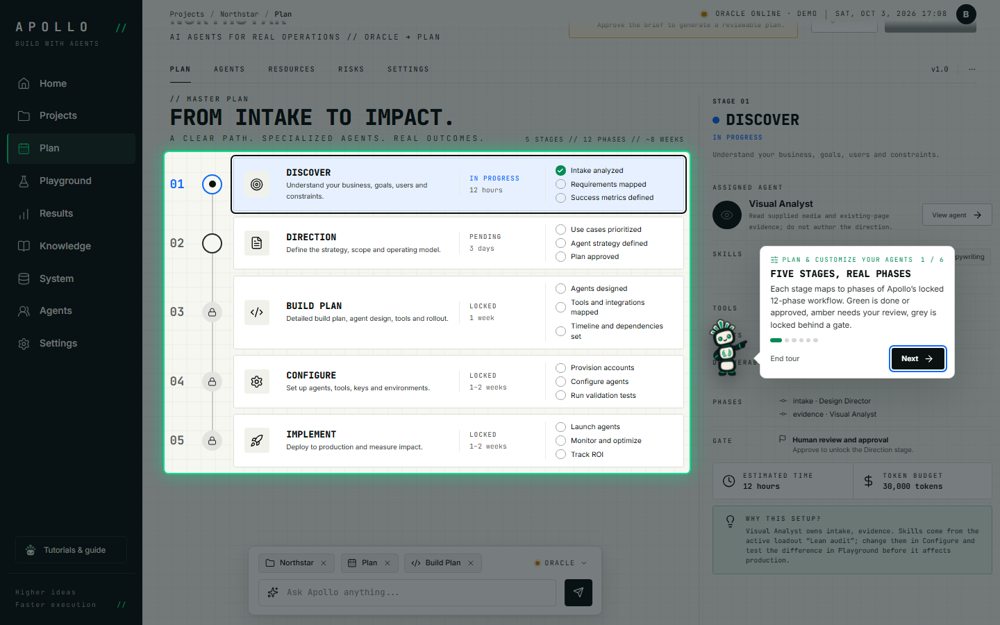
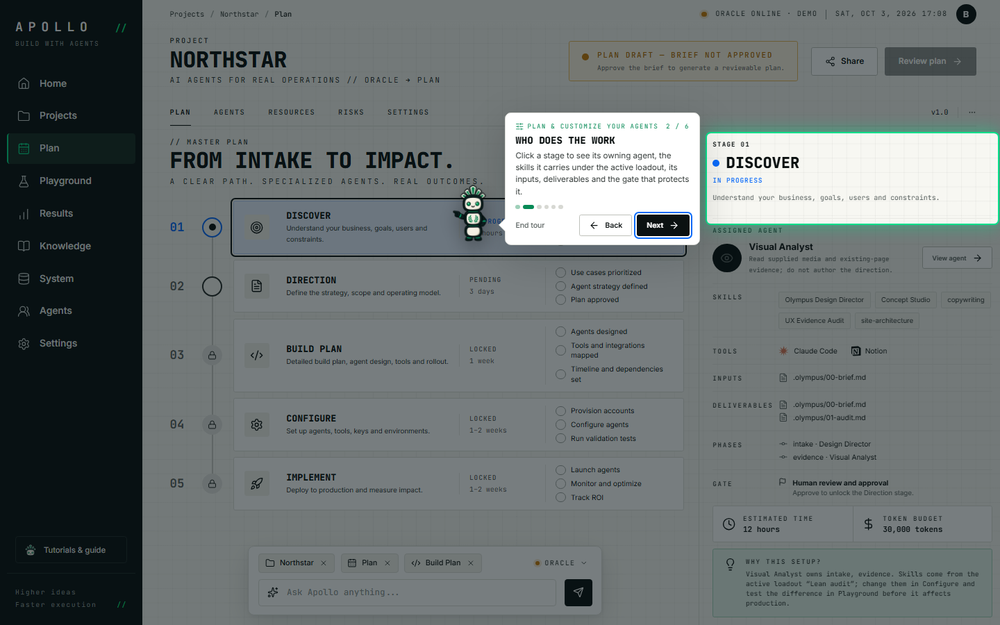
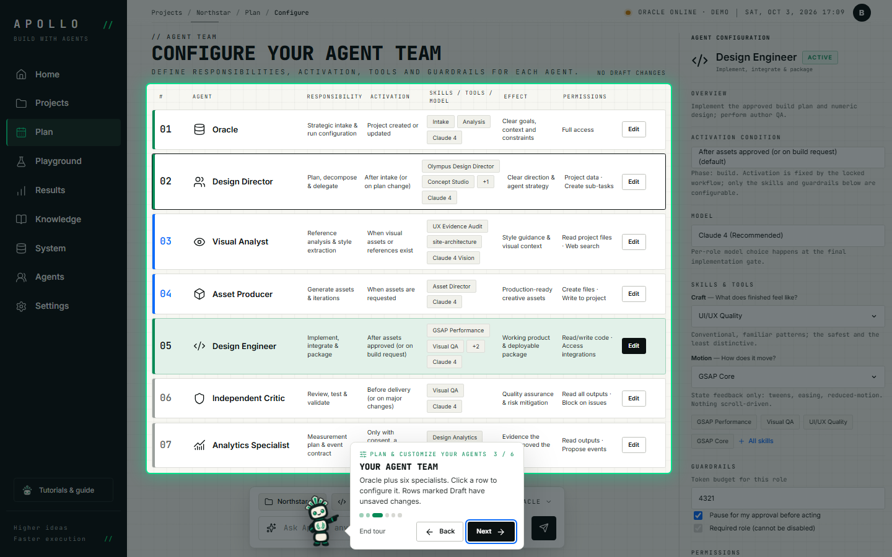
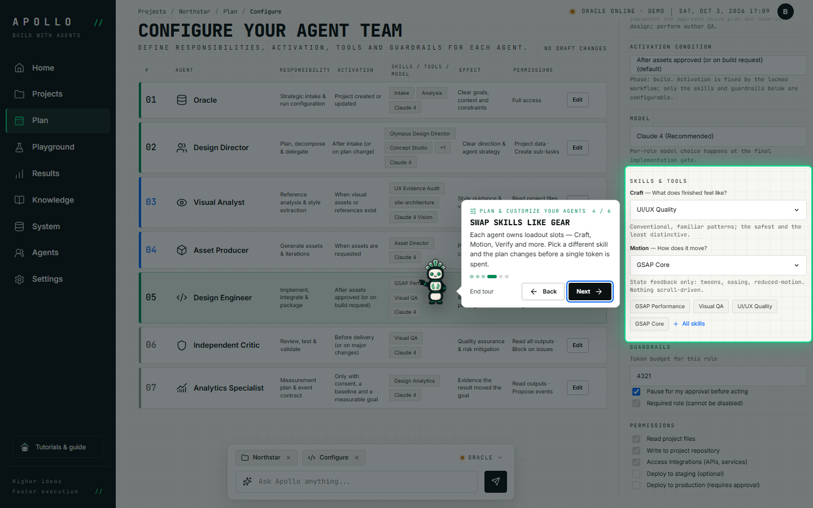
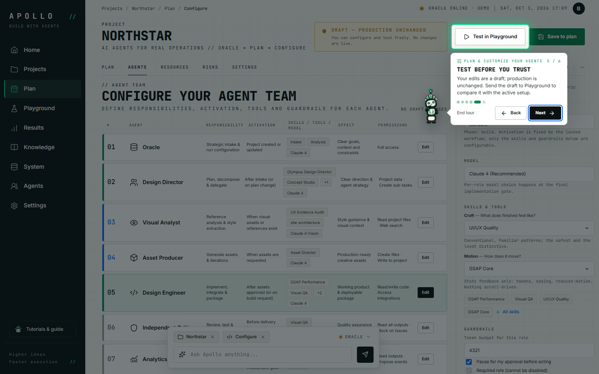
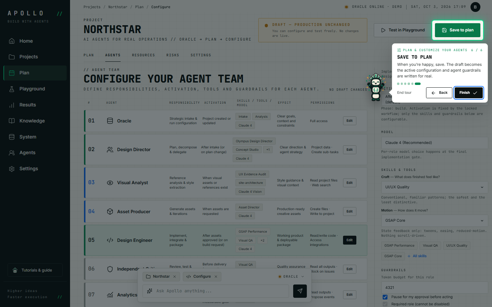

Recorded automatically with Playwright on a scratch copy of the data.
- 01

Five stages, real phases
Each stage maps to phases of Apollo’s locked 12-phase workflow. Green is done or approved, amber needs your review, grey is locked behind a gate.
Screen:
#/plan
- 02

Who does the work
Click a stage to see its owning agent, the skills it carries under the active loadout, its inputs, deliverables and the gate that protects it.
Screen:
#/plan
- 03
Your agent team
Oracle plus six specialists. Click a row to configure it. Rows marked Draft have unsaved changes.
Screen:
#/plan/configure
- 04
Swap skills like gear
Each agent owns loadout slots — Craft, Motion, Verify and more. Pick a different skill and the plan changes before a single token is spent.
Screen:
#/plan/configure
- 05

Test before you trust
Your edits are a draft; production is unchanged. Send the draft to Playground to compare it with the active setup.
Screen:
#/plan/configure
- 06

Save to plan
When you’re happy, save. The draft becomes the active configuration and agent guardrails are written for real.
Screen:
#/plan/configure